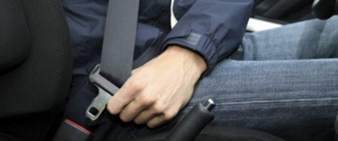

ПЕРЕВІЗНИКИ ХОЧУТЬ ПІДНЯТИ ТАРИФИ
Перевізники кажуть, що подорожчання пального має стати причиною чергового підвищення тарифу на проїзд у громадському транспорті Чернівців, розповів у програмі "Суть речей" на Радіо 10 директор Департаменту ЖКГ міськради Володимир Бешлей: Ми працюємо над цим. Транспортну модель потрібно розробляти і працювати над організацією руху. Ми працюємо...
Читати більше
ЧЕРНІВЦІ В РЕЙТИНГУ НАЙВІДПОВІДАЛЬНІШИХ ВОДІЇВ

Чернівці опинилися на 16-му місці рейтингу міст України з найбільш відповідальними водіями.
Про це свідчать результати дослідження "Рівень користування ременями безпеки серед водіїв в обласних центрах України", пише керівник Головного сервісного центру МВС Владислав Криклий на своїй сторінці у Facebook.
Згідно з даними рейтингу, 2018 року в українських містах ременем безпеки користується всього 23% водіїв, що на 8% більше ніж роком раніше Опитання проводилось у 22 обласних центрах, а ще у Сєвєродонецьку і Маріуполі. Воно охопило 35 тисяч респондентів.
Так, виявляється, що у середньому лише кожен п’ятий водій користується ременем безпеки. Відчутно вищий показник відповідальності у Києві – 53% автомобілістів віддають перевагу безпечним подорожам. У столиці кількість водіїв, які користуються ременями безпеки від 2017 року зросла також найбільше – на 15%.
Загалом рейтинг міст України, де водії найбільше користуються ременями безпеки має такий вигляд:
1. Київ – 53%,
2. Житомир – 39%,
3. Львів – 38%,
4. Черкаси – 34%,
5. Івано-Франківськ – 27%.
Окремо у статистиці відзначаються шість міст, які подвоїли свої показники порівняно з 2017 роком – це Івано-Франківськ, Чернігів, Рівне, Тернопіль, Херсон і Чернівці. Останні опинилися на 16-тій позиції рейтингу міст з найвідповідальнішими водіями.
Читати менше
СНІГОВА НЕПОГОДА НА БУКОВИНІ
Різке погіршення погодних умов завдало клопотів водіям автомобілів та пішоходам у Чернівецькій області. Так, за першу добу снігопаду щонайменше п’ять транспортних засобів перекинулись або злетіли із засніжених автомобільних трас. Так, на трасі "Чернівці–Хотин" вантажівка та позашляховик перекинулися в кювет. Згодом на автотрасі М-19 ще два транс...
Читати більше
ЗАПРОПОНУЙ СВОЮ НОВИНУ